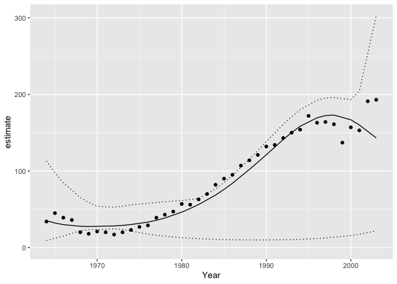

Introduction
jmbr (pronounced jimber) is an R package to facilitate analyses using Just Another Gibbs Sampler (JAGS).
It is part of the mbr family of packages.
Demonstration
# define model in JAGS language
model <- model("model {
alpha ~ dnorm(0, 10^-2)
beta1 ~ dnorm(0, 10^-2)
beta2 ~ dnorm(0, 10^-2)
beta3 ~ dnorm(0, 10^-2)
log_sAnnual ~ dnorm(0, 10^-2)
log(sAnnual) <- log_sAnnual
for(i in 1:nAnnual) {
bAnnual[i] ~ dnorm(0, sAnnual^-2)
}
for (i in 1:length(Pairs)) {
log(ePairs[i]) <- alpha + beta1 * Year[i] + beta2 * Year[i]^2 + beta3 * Year[i]^3 + bAnnual[Annual[i]]
Pairs[i] ~ dpois(ePairs[i])
}
}")
# add R code to calculate derived parameters
model <- update_model(model, new_expr = "
for (i in 1:length(Pairs)) {
log(prediction[i]) <- alpha + beta1 * Year[i] + beta2 * Year[i]^2 + beta3 * Year[i]^3 + bAnnual[Annual[i]]
}")
# define data types and center year
model <- update_model(model,
select_data = list("Pairs" = integer(), "Year*" = integer(), Annual = factor()),
derived = "sAnnual",
random_effects = list(bAnnual = "Annual"))
data <- bauw::peregrine
data$Annual <- factor(data$Year)
set_analysis_mode("report")
# analyse
analysis <- analyse(model, data = data)
#> Registered S3 method overwritten by 'rjags':
#> method from
#> as.mcmc.list.mcarray mcmcr
#> # A tibble: 1 × 8
#> n K nchains niters nthin ess rhat converged
#> <int> <int> <int> <int> <int> <int> <dbl> <lgl>
#> 1 40 5 3 500 1 9 5.11 FALSE
analysis <- reanalyse(analysis)
#> # A tibble: 1 × 8
#> n K nchains niters nthin ess rhat converged
#> <int> <int> <int> <int> <int> <int> <dbl> <lgl>
#> 1 40 5 3 500 2 44 3.47 FALSE
coef(analysis, simplify = TRUE)
#> # A tibble: 5 × 5
#> term estimate lower upper svalue
#> <term> <dbl> <dbl> <dbl> <dbl>
#> 1 alpha 4.25 3.05 4.35 10.6
#> 2 beta1 1.16 -1.13 1.33 1.55
#> 3 beta2 -0.0160 -0.205 0.419 0.520
#> 4 beta3 -0.254 -0.338 0.768 1.35
#> 5 log_sAnnual -2.10 -2.82 0.366 1.78
plot(analysis)

# make predictions by varying year with other predictors including the random effect of Annual held constant
year <- predict(analysis, new_data = "Year")
# plot those predictions
library(ggplot2)
ggplot(data = year, aes(x = Year, y = estimate)) +
geom_point(data = bauw::peregrine, aes(y = Pairs)) +
geom_line() +
geom_line(aes(y = lower), linetype = "dotted") +
geom_line(aes(y = upper), linetype = "dotted") +
expand_limits(y = 0)
Citation
To cite jmbr in publications use:
Joe Thorley (2018) jmbr: Analyses Using JAGS. doi:
https://doi.org/10.5281/zenodo.1162355.
A BibTeX entry for LaTeX users is
@Misc{,
author = {Joe Thorley},
year = {2018},
title = {jmbr: Analyses Using JAGS},
doi = {https://doi.org/10.5281/zenodo.1162355},
}
Please also cite JAGS.Code of Conduct
Please note that the jmbr project is released with a Contributor Code of Conduct. By contributing to this project, you agree to abide by its terms.